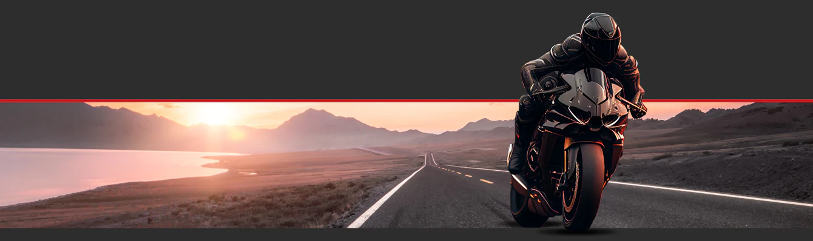

Realizar a manutenção preventiva da sua moto é essencial para garantir seu bom funcionamento e segurança. Aqui estão algumas dicas valiosas que podem fazer a diferença na durabilidade do veículo e na sua própria segurança:
Trocar o óleo regularmente é um dos cuidados mais importantes com o motor da sua moto. O óleo é responsável por lubrificar as partes móveis do motor, reduzindo o atrito e o desgaste. Não seguir o cronograma de troca pode resultar em falhas graves no motor, sobreaquecimento e perda de desempenho. Verifique o tipo de óleo recomendado no manual do fabricante e realize a troca de acordo com a quilometragem especificada.
O sistema de freios é crucial para sua segurança. Inspecione regularmente o nível do fluido de freio e verifique o desgaste das pastilhas. Pastilhas gastas podem comprometer a eficácia da frenagem, enquanto um fluido de freio velho ou contaminado pode causar falhas. Troque o fluido de freio conforme recomendado, geralmente a cada dois anos, e nunca ignore sinais de freios ruidosos ou duros.
Os pneus são o ponto de contato entre você e a estrada, por isso mantê-los em boas condições é vital. Verifique regularmente a pressão dos pneus usando um manômetro confiável. Pneus descalibrados podem aumentar o consumo de combustível, diminuir a aderência e reduzir o controle da moto. Além disso, fique atento ao desgaste da banda de rodagem; pneus carecas ou com rachaduras devem ser substituídos imediatamente.
O filtro de ar impede que poeira e detritos entrem no motor, mas com o tempo ele se suja e obstrui o fluxo de ar. Isso pode causar perda de potência, aumento no consumo de combustível e danos ao motor. Limpe ou substitua o filtro de ar regularmente para garantir o fluxo ideal de ar para o motor. Isso também ajuda a prolongar a vida útil do motor e melhorar o desempenho da moto.
A bateria da moto alimenta os componentes elétricos, como faróis, piscas e o sistema de ignição. Uma bateria fraca pode deixar você na mão. Verifique periodicamente o nível de carga da bateria e observe se há sinais de corrosão nos terminais. Se você não utiliza a moto com frequência, considere utilizar um carregador de manutenção para manter a bateria em boas condições.
A corrente de transmissão transfere a potência do motor para a roda traseira. Uma corrente desajustada pode causar perda de potência e desgaste prematuro dos componentes. Verifique a tensão da corrente regularmente e lubrifique-a para evitar corrosão e desgaste. Uma corrente bem ajustada e lubrificada melhora a performance e garante a longevidade do sistema de transmissão.
A manutenção preventiva é uma das melhores maneiras de garantir que sua moto continue operando de forma eficiente e segura. Além de seguir essas dicas, é recomendável que você faça revisões regulares com um mecânico de confiança para identificar possíveis problemas antes que eles se agravem. Lembre-se de que uma moto bem cuidada oferece uma pilotagem mais tranquila e econômica.